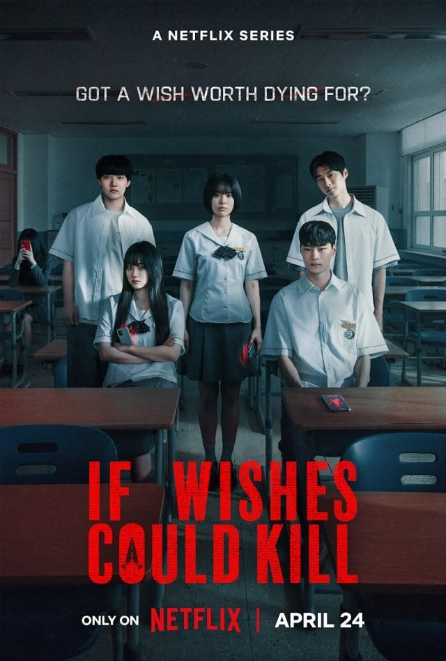
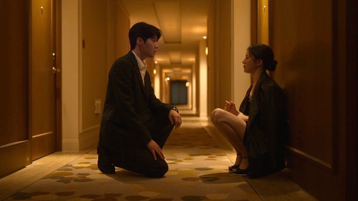

I started watching this show because of its game ,survival theme .
uhuh but aslo cuz of the actors and cast choice. Really liked the opening scene , the friendshio between the characters which was not forced and the same time the moments of betrayal from each other for survival.
The ending was unexpected and would make you want to wait for the season 2.
Side note the chemistry between the non couple 🚨

IF WISHES COULD KILL
GENRE:Korean horror, Young adult literature, Mystery, Supernatural fiction
THIS SHOW is like they understood their assignment and slayed it . The way the twist takes place in every episode.its a good mixture of suspense ,thriller and horror
and back story they have of two friend is a whole plot itself. the brother in law character is a cherry on top ,how he helps the kids to break the curse ,each character are slaying and unique
And yeah im rooting for its season 2

CAN THIS LOVE BE TRANSLATED
GENRE:ROMANTIC COMEDY
CAN THIS LOVE BE TRANSLATED.its a slow burn, visually stunning,the foreign location are potrayed so well and aesthetically .its not just the visual the acting of the characters are great
its about a actress (cha muhee) and interpreter(hoojin),they kinda have acomplicated relationship goin on not a big romantic story ,it deals with acteress having childhood trauma and a disorder and have curious personality
whereas the interpreter who have excellence in translating language but fail's to understand her emotion (crawzy), but they both try to understand eachother ,overall noice storyline and love the ost's
IN YOUR RADIENT SEASON
GENRE: Mystery, Romance, Drama
IN YOUR RADIANT SEASON IS A TYPICAL DRAMA BUT SLOW PACED,CALM,AND MOVE IN ITS OWN PACED, WHERE
SONG HARA IS CHIEF DESIGNER IN HIGH-END FASHION HOUSE NANA ATELIER WHO WENT FROM FROM BUBBLY AND SPRING SEASON TO LOOKING HERSELF IN QUIETNESS AND WINTER
MALE LEAD-SUNWOO CHAN WORKS AS CHARACTER DESIGNER .WHO HAS A BRIGHT AND CHEERFUL SIDE BUT BEHIND IT HIDES DEEP WOUNDS AND mysterious accident that took place in his life before entering hara life. it does have interesting plot of how hes connected to hara's life.
the show DOSENT HAVE HEAVY TWITS AND TURNS ABOUT GOES ON WITH GENTLE FLOW ,
IT SHOWS FEELING THE CHARACTER GOES THROUGH LONELINESS ,LOSS OF LOVED ONES AND FINDING HOME IN SOMEONE ELSE ,
IT SHOWS FOUR DIFFERENT ROMANTIC PAIR EACH WITH THERE OWN UNIQUE PROBLEMS AND WAY OF SHOWING CARE AND LOVE (CRAWZY STUFFF)